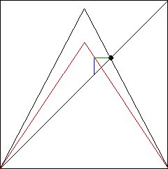
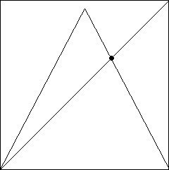

|  |  |
| On the left, the tent map is adjusted to the appropriate s-value, sending the next iterate very near the fixed point of the original tent map. | |||
| On the right, the tent map is returned to its original s-value, so the iterates will remain near the fixed point for some time. | |||
| |||
| When the iterates move too far away, we again apply the control process. And so on. |
Return to Control of Chaos.